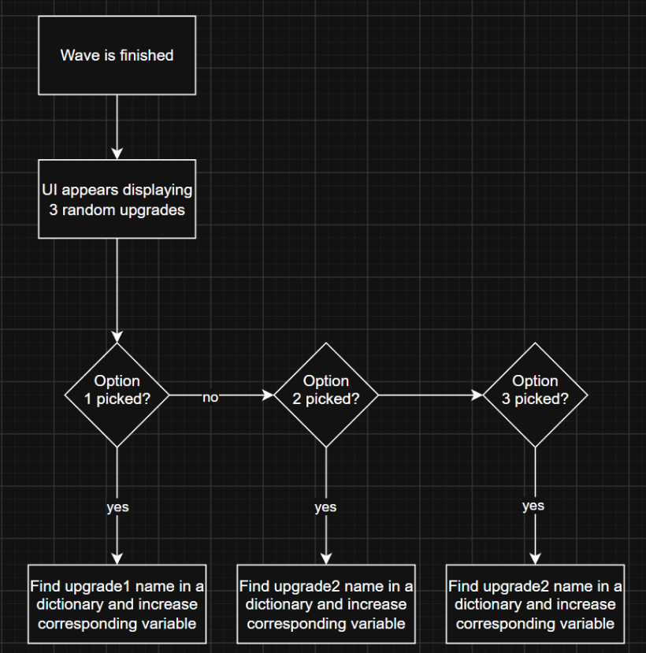
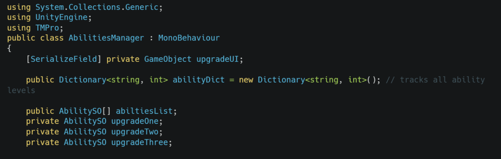
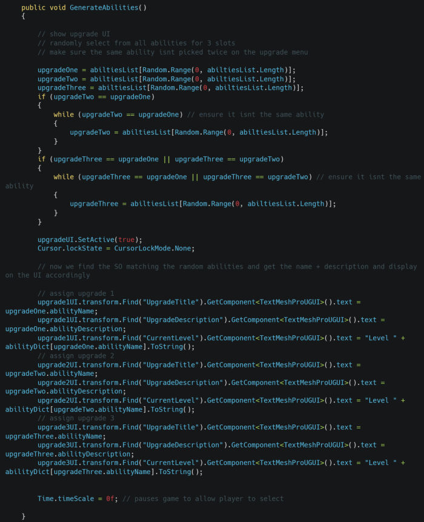
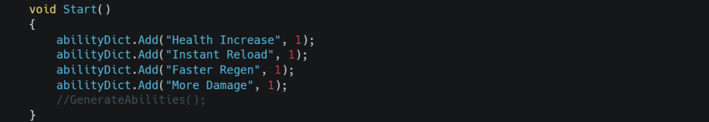
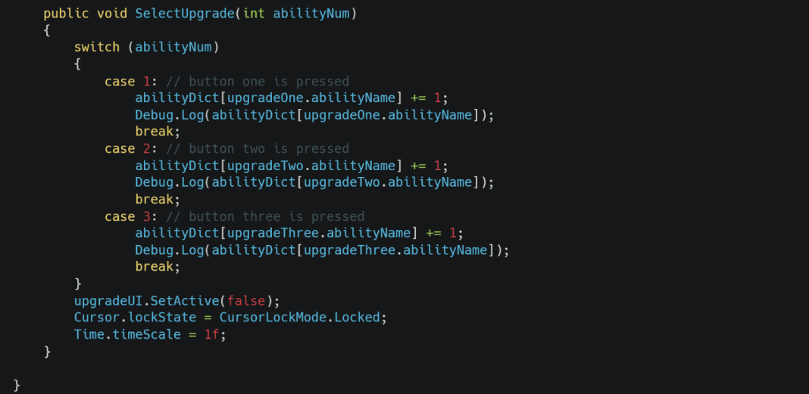

Functional requirement
“There should be an upgrade screen at the end of each wave that picks 3 random abilities. When you choose an ability, it should hide the UI and apply the ability.”
Testable criteria:
Upgrade UI appears at the end of a wave with the name, description and level
Clicking the button applies the correct upgrade
The same upgrade shouldn’t be able to appear more than once in the same round


Variables for storing the upgrades chosen, and a dictionary that tracks the levels for all upgrades.

This method is called at the end of a wave. It first chooses a random ability from an array of ability SOs that contain the name and description of the ability. It rerolls incase of duplicates, and then assigns the text on the upgrade UI to display everything correctly.

Add every ability to the dictionary at level 1 to begin with.

This method is called when clicking a button on the upgrade UI. Each button provides either 1, 2, or 3 in the parameters, and that dictates which upgrade was selected. It then finds the ability in the dictionary and increments its level by 1